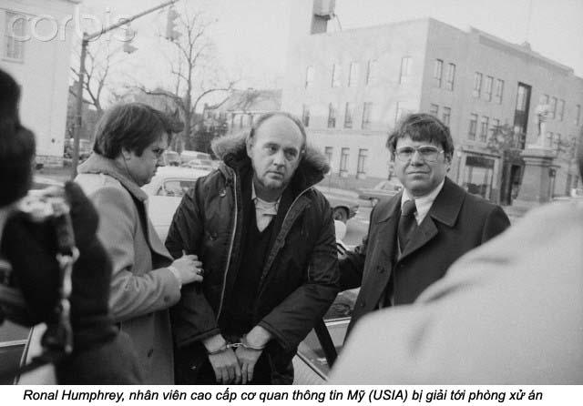
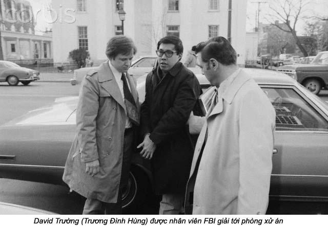
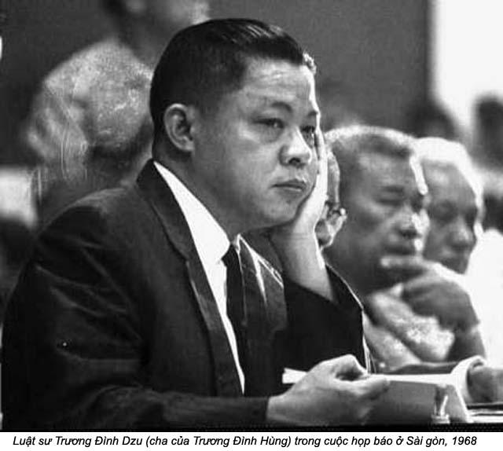

Chương Kết

ậy là cuộc viếng thăm chấm dứt!
Chúng tôi đã được gặp ba tôi và đã hỏi bằng nhiều cách muốn ông trở về sống với gia đình và đã bị ông từ chối. Má tôi đã yêu cầu được gặp con trai của ba, và lời yêu cầu cũng đã bị bác bỏ. Không còn gì để làm hay để nói nữa.
Bill Fleshman hăm hở sửa soạn về Washington với vẻ mặt của một người thẳng cuộc khi từ biệt chúng tôi. Trong khi đó, lần đầu tiên Rob và tôi cảm thấy cùng một phe với nhau - những dự tính, những mục đích của tôi và CIA sắp sửa bị huỷ bỏ hết, khi bị đưa ra công khai trước toà án. Tôi muốn chia sẻ với Rob cái cảm giác của người bị thất bại, nhưng không có lời nào nói lên được cảm tưởng đó. Một bầu không khí trống rỗng bao phù chúng tôi khi tôi gặp Rob lần chót tại Reeve Mouse.
Trên xe taxi về nhà, tôi cố gắng quên chuyện đã qua. Trước mắt là chuyện bây giờ, hôm nay và ngày mai. Tôi nghĩ tới Trương Đình Hùng. Từ đây về sau, cơ quan truyền thông sẽ biết đến anh với cái tên David Trường. Tôi hình dung vẻ mặt sửng sốt của anh khi bị bắt, rồi tưởng tượng ra cảnh anh bị giải từ nhà tù ra toà án. Hùng sẽ nở nụ cười giượng trước những ống kính của các phóng viên nhà báo và đài truyền hình, nụ cười của một kẻ tự cho mình là đã hy sinh cho một lý tưởng, và tôi cũng nghĩ tới phản ứng của ba tôi ở Sài gòn, khi ông hay tin động trời về đứa con gái của ông. Ông sẽ nghỉ một ngày ở nhà để sống biệt lập trong căn biệt thự của ông, ông sẽ thiền, sẽ nằm bất động như vài lần ông đã nằm ở tư thế đó tại nhà tôi.
Chúng tôi rời Luân Đôn ngày 12 tháng Giêng năm 1978. Bây giờ nghĩ lại, đó là ngày lý tưởng để từ giã Luân Đôn. Hôm đó, lò sưởi căn nhà mướn của tôi bị hư, nhà lạnh cóng, trong khi tuyết bao phủ khắp nơi và mặt trời ẩn trốn sau những đám mây u ám từ nhiều ngày đó. Trời lạnh lẽo cũng như sự lạnh lùng của má tôi. Tuyết rơi suốt dọc đường đưa gia đình tôi ra phi trường Heathrow. Từ đây, nước Mỹ là nhà…
***
Với tâm hồn của người du mục, John và tôi đã chịu đựng được những cuộc di chuyển và thay đổi liên tục của gia đình hải quân. Khi trở về Washington, chúng tôi ở tạm trong một khách sạn gần hai tuần lễ để tìm nhà ở vùng Springfield, Virginia. Bộ tư pháp khuyên chúng tôi không nên lấy đồ trong kho về xài, vì có thể sau phiên toà, chúng tôi sẽ phải di chuyển tới một nói an toàn hơn. Khi kiếm được một ngôi nhà để mướn, chúng tôi phải mướn đồ đạc, bàn ghế. Chúng tôi đi PX của quân đội để mua nồi niêu xoong chảo và các thứ lính tinh cần thiết khác. Mà về ở với em tôi ở Alexandria, Virginia. Trong khi John đi làm, Lance về học lớp Ba, trường gần nhà, đi bộ tới được. Trong khi đó, ngày ngày tôi phải ra Alexandria, để thảo luận với luật sư của Bộ tư pháp và CIA, chuẩn bị cho ngày ra toà.
Trong thâm tâm, má tôi vẫn tin rằng anh Khôi sẽ không trốn khỏi Việt Nam khi mà ba tôi còn ở đó. Bà mong Bộ tư pháp trì hoãn cuộc khởi tố càng lâu càng tốt: biết đâu có một phép lạ nào đưa tới.
Những chả có phép lạ nào hết. Cuối cùng, Bill Fleshman cho tôi biết người tà sẽ bắt David Trường và Ronald Humphrey vào ngày 31 tháng Giêng, 1978. Buổi tối 30, tôi rước má tôi về nhà tôi ngủ để có nhau.
Khi tôi sửa soạn cho Lance đi ngủ, má tôi gỡ nút áo cho cháu xong thì ngước lên nhìn tôi, má nói:
- Con có một ngày nữa thôi, rồi con sẽ hối hận.
Tôi đáp:
- Con sẽ không có gì để hối hận, má à. Như má, con cũng đâu có muốn chuyện này xảy ra. Con đã làm việc với thằng Hùng, giả bộ là đồng chí của nó, đóng kịch là đồng loã với nó suốt gần một năm trời. Con đã ăn sáng, ăn trưa với nó, con đã uống trà trên nhà của nó. Có một lần nó hết tiền, con cho nó năm đồng bạc để đi xe bus. Con tội nghiệp nó như con tội nghiệp những người từ tội khác.
Má tôi vẫn lạnh lùng, không nhìn tôi.
- Má, đây là nhà của mình, quê hương mới của mình. Con tin tưởng một cách mãnh liệt là con có bổn phận phải bảo vệ nước này. Hồi đó, mình sống trên đất Việt Nam mình không có làm gì để bảo vệ đất nước, giỏi nhứt là không làm Việt Cộng thôi. Việt Nam như cái cây bị người ta bẻ hết trái mà không ai vun xới, nên mình mới mất miền Nam. Bây giờ…
Má tôi có vẻ giận, bà cắt lời tôi:
- Con không nên dậy đời má như vậy.
- Má đừng làm khó con nữa. Mấy tháng nay con như người sống dưới địa ngục kể từ ngày Bộ tư pháp đưa chưn vô nhà tụi con.
Ba nói:
- Con có dịp từ chối họ mà.
Tôi không tin má tôi muốn nói như vậy. Tôi chưa kịp nói gì, thì bà tiếp:
- Má thấy má vô dụng trong cái nhà này rồi. Hay là con để má đi Atlanta ở với chị Kim và Minh Tâm đi.
Thú thật, nghe má tôi nói vậy, tôi nhẹ trong lòng vô cùng. Thật ra, ở Washington má tôi không giúp gì được cho tôi, ngày nào hai mẹ con gặp nhau rồi cùng bàn đi bàn lại: tôi bị la rầy, má trách đúng lắm. Tôi muốn tránh mặt má tôi, những trốn đâu trong căn nhà mướn chỉ có ba cái phòng ngủ, ngoài sân thì tuyết phủ đầy đường. Xa nhau sáu trăm dặm, may ra tránh làm khổ nhau. Ý định này tôi cũng nghĩ từ trước đó, những không dám đề nghị, sợ má giận là tôi “đuổi” má.
Nhớ lời ông ngoại tôi dậy: “Làm người khó, làm chó thì dễ”. Làm người Việt Nam càng khó hơn ngoại ơi!
- Dạ, con sẽ mua vé máy bay cho má đi xuống chị Kim. Nhưng con muốn má biết là má đã nghĩ không đúng khi má nói: mà vô dụng ở đây. Lúc nào con cũng cần má, má à. Con dệt chiếc chiếu này cho con thì con nằm lên nó; nó êm thì con nhờ, nó có gai có gốc thì con chịu. Con đâu có mượn ai nằm lên giùm con được.
Má tôi hôn Lance, chúc cháu ngủ ngon, rồi tắt đèn. Lance hỏi nhỏ:
- Má cãi lộn với bà ngoại hả?
- Không, bà với má bàn công chuyện.
Lance nói bằng một giọng nghiêm trang:
- Con nghĩ bà ngoại giận má đó.
- Không, bà không có giận má đâu.
- Tốt.
Rồi Lance đổi giọng nhõng nhẽo nói:
- Má xoa lưng cho con đi, rồi viết chữ từ A tới Z cho con ngủ.
***
Tôi thức trắng đêm, nghĩ hoài đến những thử thách, gay go sắp tới. Khoảng sau giờ rưỡi sáng, tôi nhón gót ra khỏi giường rồi đi vô bếp pha cafe. Ngoài sân, có một lớp tuyết mỏng mới rơi đêm đó. Tuyết phủ lên những mảng bằng từ nhiều ngày trước. Bốn bề yên lặng, tôi nghe nhịp đập của tim tôi. Một vài miếng tuyết dầy rơi từ nóc nhà xuống cái bàn ngoài sân và trên nắp thùng rác, làm tôi giựt mình.
Ý kiến má tôi đi Atlanta là ý kiến hay. Lần đầu tiên trong đời tôi cảm thấy bức bí, hồi hộp một cách kỳ lạ khi tôi tới gần má tôi. Tôi hoảng sợ khi nghe tiếng chân của bà đi xuống nhà bếp. Tôi làm bộ chăm chú vô việc pha cafe và thay giấy lọc để khỏi phải nói chuyện với bà. Nhưng rồi bà lên tiếng trước:
- Tối hôm qua má ngủ không được.
- Con cũng vậy, suốt đêm con nghĩ hoài tới Trương Đình Hùng.
Bà hỏi:
- Nếu chuyện đó làm con khổ tâm, tại sao con lại làm?
Tôi miễn cưỡng trả lời:
- Tại con phải làm.
Sau khi Lance đi học, John đi làm, má tôi về phòng, kéo màn cửa sổ che lại rồi đi nằm. Tôi mở va-li, lấy ra mấy bộ đồ để ủi, giết thì giờ.
Khoảng mười giờ rưỡi, John về nhà. Tôi hơi ngạc nhiên thấy anh về sớm, những mừng quá, vì tôi sợ cái yên lặng ngợp thở trong căn nhà này rồi. John rủ tôi đi chợ mua với thứ lặt vặt.
Chúng tôi mời má tôi đi cùng, nhưng bà từ chối, viện cớ là trời lạnh. Quá trưa một chút, trên đường về nhà, tôi mở radio nghe im tức, thì ngay lúc đó người xướng ngôn viên đọc bản tin Trương Đình Hùng và Ronald Louis Humphrey vừa bị bắt. Tôi chưa bao giờ gặp Humphrey. Hùng chỉ cho tôi biết ông ta là “một người có thẻ đặc biệt để lên từng lầu thứ bảy của Bộ ngoại giao và có thể lấy bất cứ tài liệu nào chúng ta muốn”.
Thay vì thấy lòng nhẹ nhõm và vui mừng vì thành công, tâm tư tôi tràn trề sự thương xót cho Hùng. Tôi nhướng to hai con mắt để nước mắt khỏi trào ra. John đưa khăn tay cho tôi. John biết tôì sẽ xúc động hơn, vì vậy anh mới bỏ sở vế nhà với tôi. Nếu không có người chồng hiểu tôi, bao bọc tôi như John, ai cứu má và hai em tôi trước ngày cộng sản cướp miền Nam? Ai nâng tôi khi ngã, ai cười tôi khi tôi không biết kể chuyện cười?
- Dễ nhứt là mình tránh làm những việc phải! - Tôi than thở
- Không, không phải vậy. Làm sao sống được với lương tâm của em, nếu em từ chối Bộ tư pháp bây giờ? Em sẽ cảm thấy như một con lừa.
Tôi mỉm cười trong nước mắt:
- Trên thế gian này không thiếu gì con lừa; có thêm một con nữa cũng chẳng chết ai.
Chồng tôi nghiêm giọng:
- Đứng có nói bậy như vậy. Em đã tự há giá em. Việc em làm là một việc trọng đại. Thời gian sẽ cho em hiểu việc em làm cho đất nước này.
- Nghe cổ lỗ sĩ quá! Em có cảm tưởng mình là một người non dại đang làm một việc cũ rích cho Chánh phủ.
Anh nói:
- Tốt nhất là em nên im lặng, đừng nói gì nữa, nếu không muốn anh nổi giận.
Nghe giọng anh, tôi biết anh đã nổi giận rồi.
Sáu giờ chiều hôm đó, má tôi coi tin tức dài truyền hình, bà giữ im lặng, không thèm nói với tôi một lời. Tôi không coi truyền hình, bỏ lên lầu đọc chuyện cho Lance nghe. Tôi thầm tự hỏi, tôi sẽ phải nói gì với con tôi, nếu thằng nhỏ nghe tin tức về chuyện tôi dính dấp vô, hoặc thấy hình tôi trên bảo trong buổi xử án!
Cho tới giờ phút này. Lance vẫn tưởng má nó là một người “buôn bán đồ sứ” bên Paris. Chuyện gì khó qua mà John thế tôi được, tôi đùn cho anh. Thôi thì để chừng nào cần cho Lance biết, bà nó nói chuyện với nó giùm tôi vậy.
Tin tức báo chí và truyền hình cho biết David Trường bị bắt tại một sở lựa thơ trên đường K vùng Tây Bắc, Washington. Có lần Hùng nói với tôi rằng anh chọn việc làm trong một sở nhỏ. Việc lựa thơ là việc rất tầm thường, để che mắt mọi người cho anh làm “việc lớn”. Còn ông Humphrey bị bắt ở một công sở quan trọng hơn, đó là trụ sở của cơ quan Thông tin Hoa Kỳ. Người ta cũng nêu tên một số đồng loã nhưng không bị bắt, như: Huỳnh Trung Đồng, chủ tịch Hồi Việt kiều yêu nước tại Paris; Phan Thanh Nam của toà đại sứ Mặt trận giải phóng miền Nam tại Paris, và đại sứ Đinh Bá Thi, trường phái đoàn Việt Nam cộng sản tại Liên hợp quốc ở New York.
Cho đến lúc này, Bộ tư pháp chưa tiết lộ danh tánh của những người hoặc những nhân viên mật vụ tham dự cuộc điều tra, kể cả tôi. Không một ai thuộc phe cộng sản nghi ngờ tôi. Sự che giấu lý lịch của tôi có thể coi như hoàn hảo đến độ Nguyễn Thị Ngọc Thoa, đồng chí của David Trường vội gởi thơ khẩn cấp qua Luân Đôn cho tôi để báo động, khuyên tôi không nên về Mỹ và nên có một luật sư để che thân. Chị cũng khuyên tôi nên đốt hết mọi giấy tờ liên lạc giữa tôi và Hùng, cũng như với chị và những hội đoàn Việt Nam. Cuối thơ, chị nhấn mạnh: “Đừng về Mỹ!”
Huỳnh Trung Đồng cũng gởi một buu thiệp bí mật bắt tôi huỷ mọi giấy tờ hoặc tài liệu “liên hệ giữa cô và chúng tôi”, ông ra lịnh cho tôi “không được tới gần toà đại sứ và các nhân viên. Đừng để cho bất cứ ai biết cô là con gái của ông ấy”.
Là một điệp viên, tôi coi những lời cảnh cáo đó như mội lời khen cho thành tích của mình. Điều đó chứng tỏ rằng tôi không để lại một dấu vết nào chứng tỏ tôi theo phe “tư bản” hoặc tôi là một tên “phản động”.
Mãi tới ngày 17 tháng Ba, báo chí mới biết “Keyseat” là ai, khi luật sự của David Trường đệ trình toà an một bản yêu sách, hỏi về lập trường và động cơ của tôi. Trong bản yêu sách, ông ghi địa chỉ của tôi ở số 8 Regal Lane, Regent Park, London. Đó là địa chỉ cuối cùng của tôi mà Hùng biết.
Hôm sau Lance đi học về, nói với tôi rằng cô giáo của Lance đưa hình tôi trong tờ báo, hỏi có phải người làm chứng trong vụ án là má của Lance không. Lance trả lời cô giáo: “Chắc là đúng vì chỉ có một Dung Krall đã ở nhà số 8 Regal Lane. London thôi”. Vợ chồng tôi đã mất nguyên một buổi tối để giải thích đứa nhỏ mới bảy tuổi hiểu về những hoạt động của má nó trong hai năm qua. Nó lắng nghe cẩn thận, rồi cuối cùng nói:
- Vậy là má làm cho FBI! Con thấy Bill Fleshman có bộ dáng của FBI.
Tôi và John nin cười muốn bể bụng.
Tôi không rõ con tôi hiểu việc này tới mức nào, nhưng chúng tôi cố gắng cho Lance biết rằng, từ nay trở đi, cẩn thận giữ mình là điều quan trọng. Chúng tôi dặn Lance không bao giờ ra khỏi sân trường trong giờ học, không được đi theo người lạ.
Sau buổi nói chuyện đó mấy ngày, có kẻ cây cửa lên vô tôi khi chúng tôi đi vắng. Khi về, tôi thấy đèn treo trên nóc trên bàn ăn bị bẻ, mạnh thuỷ tinh văng tứ tung trong phòng. Trên bàn ăn có chữ “phản bội” viết nguệch ngoạc bằng mực đen trên tấm giấy có gạch hàng.
Tôi giận hơn là sợ, liền gọi cho John biết. Sau đó tôi gọi ông Don Marsland, người giám sát của chiến dịch “Magic Dragon”. Chỉ trong vòng có mấy phút, John về tới nhà: nhân viên FBI cũng tới ngay sau đó. Cả xe cảnh sát cũng hú kèn chạy tới. Nhà biến thành một nơi công cộng. Các điều tra viên lấy dấu tay trên nắm cửa, mặt bàn, tủ lạnh, bếp. Tôi phải trả lời liên tục những câu hỏi má tôi biết chẳng có liên quan gì cho cuộc điều tra. Điều mà tôi lo ngại hơn hết là con tôi. Vì vậy, tôi yêu cầu mọi người cố gắng làm cho xong việc trước khi con tôi đi học về. Tôi không muốn Lance lo sợ. Tôi muốn con tôi sống một cách vô tư, bình thường như những đứa con có cha mẹ bình thường hơn tôi.
Chiều hôm đó, tôi nói dối với Lance là tôi đã vô ý làm bị vỡ đèn khi tôi cuốn sợi đây điện cho ngắn lại để ba cháu không bị đụng đầu mỗi khi ngồi xuống đứng lên tại bàn ăn, vì trước đó John cũng đã bị đụng đấu vô cái chá đèn mấy lần rồi. Lance tin tôi ngay và còn chọc tôi:
- Vậy thì má phải để dành tiền để mua cái đèn khác, thường cho chủ nhà.
Thằng nhỏ nói đúng, vì đây là nhà mướn; làm hư đồ trong nhà thì phải thường cho chủ. Tôi gật đầu đồng ý với con.
Don Marsland cho chồng tôi biết chung quanh nhà tôi sẽ có người canh chừng suốt ngày đêm, ông ta đoán rằng kể xâm phạm có thể trở lại. Một người khác được biết phái tới để coi chừng Lance ở sân trường vào giờ ra chơi.
Hai ngày sau đó, tôi đi bộ với Lance tới trường. Trường chỉ cách nhà có vài đoạn đường ngắn. Nhưng tới ngày thứ ba, Lance phản đối:
- Con lớn rồi, con đi học một mình được mà.
Tôi đành để Lance đi một mình. Tôi biết mình đã vô tình truyền sự lo sợ của mình qua thằng nhỏ. Tôi không thích nó cứ phải lo sợ nhìn trước nhìn sau, lúc đi tới trường.
Một tuần sau, một việc kinh hoàng xảy tới cho gia đình tôi. Tan học rồi mà mười phút sau Lance không về nhà như thường lệ.
Tôi ráng chờ thêm năm phút nữa, rồi lao mình ra khỏi nhà, chạy dọc theo con đường quen thuộc mọi khi. Tới trường, tôi chạy vô sản chơi kiếm Lance, phòng vệ sinh của con trai thì vắng lặng, văn phòng hiệu trưởng cũng vắng. Người gác dan cũng giúp tôi kiếm cháu. Không có một vết tích nào của Lance, kể cả hộp đựng cơm trưa có vẽ hình người Nhện. Tôi như người mất trí.
Tôi lại chạy về nhà, hy vọng trong tuyệt vọng sẽ thấy con mình ngồi trên ghế dài ở phòng khách, coi hí hoạ trong truyền hình. Nhưng căn nhà vẫn trong trơn. Tôi kêu điện thoại cho hai bà mẹ của hai đứa bạn của Lance, nhưng cả hai đều cho biết họ không thấy Lance. Lúc đó là đúng một giờ mười lăm phút sau giờ tan học. Tôi cố lấy lại bình tĩnh để kêu cho chồng tôi. Anh cho biết anh sẽ về nhà ngay. Tôi trở lại trường kiếm Lance một lần nữa.
Giờ đó, sân chơi vắng về. Tôi đi vòng quanh sân, trong khi tim tôi đập thình thịch trong lồng ngực và đầu tôi quay cuồng. Người gác dan thấy tôi, hỏi:
- Bà vẫn chưa kiếm được thằng nhỏ a? Sao bà không báo cảnh sát?
Tôi rất sợ phương pháp điều tra của cảnh sát. Họ có thể hỏi tôi Lance có phải là một đứa nhỏ hư không? Nó có hay bỏ trốn đi không? Nó có hay bị cha mẹ đánh không?
Tôi không biết làm gì nữa, đành trở về nhà. Trên máy truyền hình trong phòng khách, có một bức hình Lance chụp ở trường học bên Luân Đôn. Đó là một tấm hình Lance sún răng cửa như tất cả mấy cậu bé bảy tuổi. Tôi cầm lấy tấm hình rồi quỳ xuống sàn, ôn lại giây phút cuối cùng hồi sáng nay trước khi Lance đi học. Lance đòi ăn bánh mì nướng, nhưng nhà đã hết bánh mì, Lance muốn nước cam, nhưng tôi cho cháu nước chocolat nóng để “con được âm“, tôi nói với Lance như vậy. Lúc tôi đánh thức cháu dậy đi học, Lance xin ngủ thêm năm phút nữra, nhưng tôi không cho. Tôi ôn lại những điều tôi đã làm con tôi thất vọng sáng nay. Tôi bật khóc, rồi nói lớn:
- Lance ơi, về nhà với má đi. Má sẽ cho con bánh mì nướng, cho con nước cam và tất cả những gì con thích!
Thình lình cửa cái mở tung ra. Lance xuất hiện ngày giữa cửa, như nó vừa nhảy ra khỏi bức hình mà tôi đang ôm. Vẫn cái áo jacket mầu kem bằng nhung kẻ, vẫn cái áo chemise trắng, vẫn nụ cười răng sún. Lance hớn hở nói lớn:
- Hi Mom!
Trong giây khắc, tôi giận điếng lên. Nhưng tôi vội nuốt vô bụng, chạy ra cửa. Chắc Lance không hiểu tại sao tôi bồng nó lên, ôm ghì lấy nó, rồi vừa khóc vừa cười, vừa ngạc nhiên. Lance cho biết lý do về trễ:
- Con có một thằng bạn mới, ba nó là không quân mới dọn tới. Nhà nó ở ngay sau nhà mình. Máà có thấy căn nhà mầu xám kia không? Nhà nó đó. Hôm nay xe chở đồ tới, họ mở đồ ra. Tụi con được coi đồ chơi của nó. Vui lắm, má ơi!
Tôi chẳng vui chút nào! Mặt mày hớn hở, Lance vừa nói vừa lôi tay tôi, chỉ cho biết nhà thằng bạn mới.
Tôi hoàn hồn, đi hâm soup cho Lance ăn. Ráng bình tĩnh, nhỏ nhẹ mà dặn Lance rằng, từ này trở đi, khi tan học nó phải về thẳng nhà, nó phải xin phép mới được đi chơi nhà bạn. Bạn là ai? Ở đâu? Tôi cố gắng giấu nỗi lo sợ của tôi, để đầu óc non nớt của con tôi không bị xáo trộn. Nhưng tôi cũng không giấu nổi thằng nhỏ nhậy cảm này.
- Chuyện gì xảy ra vậy? - Lance hỏi hai ba lần.
Cuối cùng tôi đành phải nói thật, là suốt hơn một tiếng đồng hồ vừa qua, tôi đã tưởng tôi có thể chết, vì nó không về nhà đúng giờ. Thấy con buồn hiu, tôi lại hối hận. Tự do cũng quan trọng với mấy đứa con nít. Tôi không muốn tước đoạt những quyền đó của con tôi. Tôi làm điệp viên cho CIA, tôi phải chịu nghịch cảnh, chớ con tôi vô tư, vô tội.
Khi John bỏ sở từ ngoài Pentagon hấp tấp chạy về mấy phút sau đó. Lance ngồi ở phòng khách coi TV một cách vô tư. Như tôi lúc này, anh cũng nổi giận, tắt TV và la con một trận. Lance bối rối khóc, vì cũng như những đứa trẻ khác, Lance đã quên chuyện vừa xảy ra, nhưng Lance cũng hứa với ba nó là từ nay nó sẽ đi thẳng về nhà sau khi tan học, trở thành thói quen. Lance đã giữ dùng lời hứa đó cho tới năm ra trường trung học. Đi thưa về trình, và luôn luôn giữ đúng giờ. Cũng như Lance, tôi giữ lời hứa: Lance muốn ăn món gì là có món đó. Bây giờ con tôi sống xa nhà, vagi tháng gọi về cho biết: “Con hết chả giò, con hết thịt nướng”.
***
Giữa tháng Tư, tôi nhận được một lá thơ, ngoài bao thơ đề tên tôi. Tôi mở ra đọc ngay:
“Gửi Mỹ Dung
Tôi nhờ một người bạn gởi thơ này cho cô. Rất tiếc là tôi không thể đích thân gặp cổ để thảo luận sâu xa hơn để cô hiểu về lập trường của chúng tôi những người có trách nhiệm ở trong nước.
Làm con của ba cô, ít nhứt cô phải biết điều đó. Danh dự và quyền lợi của quê cha đất tổ phải được đặt lên trên tất cả mọi thứ. Khi ra toà làm chứng, cô trở thành kẻ phản quốc. Có đã đọc sử nên biết rằng chúng ta xử tử kẻ phản quốc để trừng phạt. Không phải chỉ một tên phản quốc bị trừng phạt mà cả ba đời nhà nó.
Cô có mẹ, có chú bác, cô dì, có anh chị em, tất cả mọi người đều là nạn nhân của tội ác ngu dại của cô.
Tuy nhiên cô còn đủ thời gian ngưng lại việc tai hại đó. Tôi sẽ không liên lạc với cô nữa. Cô không được trình thơ này vho người Mỹ coi. Tôi hy vọng cô có yhgi suy nghĩ kỹ để ngẫm lại.
Cuối thơ, chỉ ghi “một người bạn của ba cô”.
Tôi đưa lá thơ cho một nhân viên FBI và dịch sang tiếng Mỹ cho ông ta.
Bây giờ chúng tôi phải kiếm cách bảo vệ Lance cẩn thận hơn trước. Giúp nước không có nghĩa là để mặc cho con gặp nguy hiểm. John và tôi quyết định gởi cháu tới ở nhà chị thứ tư của tôi là chị Cương. Anh Wray, chồng chị, hiện đang trú đóng tại căn cứ Fort Huachuca, tiểu bang Arizona, và tôi nghĩ rằng nhà ở trong căn cứ quân sự là nơi an toàn nhứt có thể an toàn hơn toà Bạch ốc.
Tôi cầu cứu với chị Cương thì chị mừng lắm. Tôi nghe đám cháu của tôi reo hò khi má nó cho biết Lance sẽ xuống Arizona ở đi học.
Chồng tôi gọi ông chỉ huy trưởng của Fort Huachuca, trình bày trường hợp của gia đình tôi, và nhờ ông chú ý con của chúng tôi về việc nhập học cũng như an ninh của nó. Sau khi họ sẵn sàng nhận công tác đó, chúng tôi giải thích cho Lance biết, rằng tôi sẽ rất bận rộn khi ra toà làm chứng và ba cháu vẫn phải đi làm, nên chúng tôi nghĩ rằng đây là dịp tốt để Lance chơi với mấy người anh chị bà con.
Kenneth bằng tuổi Lance. Hai chị của nó là Therese và Christina lớn hơn Lance bốn năm tuổi. Lance hớn hở nhận lòi ngay. Hai ông Bill Fleshman và Don Maryland đều ủng hộ ý kiến đó. Không những vậy, họ còn thu xếp cho một nhân viên FBI gặp chúng tôi ở phi trường Tucson để lái xe đưa chúng tôi tới tới Fort Huachuca, cách phi trường chừng hai tiếng lái xe.
Rời mùa đông lạnh lẽo ở Virginia, Lance có vẻ thích thú khi thấy trời nắng của Arizona. Ngồi trên xe do một thám tử của FBI lái, Lance xin quay cửa kiếng xuống để được hưởng nắng ấm, rồi kêu lên:
- Trời nắng tuyệt vời quá! Ấm quá! Đẹp quá? Goodbye London, goodbye Washington, D.C, goodbye Virginia!
Ông thám tử của FBI chắc cũng mệt vì những câu hỏi của Lance:
- Có rắn độc ở sa mạc không? Ông có dám ăn xương rồng nếu bị lạc trong sa mạc không có nước uống?
Ấy là chưa kể tại những thắc mắc về chính ông ta, như:
- Ông có phải là nhân viên FBI không? Tại sao ông không đeo súng? Ông Bill Fleshman, bạn của má, lúc nào cũng đeo súng, chỉ khi sang London thì Bill không đeo súng.
Nhưng may quá, mới đi được nữa đường thì Lance ngã ra ngủ.
Chị Cương, anh Wray và ba đứa con của chị tôi vui mừng khi Lance tới tỵ nạn nhà anh chị. Lance hoà nhập một cách tự nhiên với mọi người. Sáng hôm sau, chúng tôi dẫn Lance tới trường xin đi học, và Lance có một nhận xét:
- Đây là trường thứ ba trong năm nay của con, nhưng con vẫn thích lắm.
Chị Cương và tôi nhìn nhau. Chị ứa nước mắt.
- Tội nghiệp cháu tôi quá! - chị nói.
- Đừng lo đi chị Cương. Lance thích Arizona lắm.
Tôi cho Lance biết tôi sẽ phải trở về Washington, Lance tỏ vẻ bình tĩnh, chỉ dặn tôi nhớ kêu điện thoại cho cháu mỗi tuần một lần vào chiều thứ sáu, sau khi đi học về. Lance còn nhấn mạnh:
- Con không có tiền để kêu ba má, mà con nghĩ rằng con cũng không có quyền xài điện thoại của uncle Wray kêu đi xa. Vậy mà phải kêu con đó nhen.
Tôi long trọng hứa chắc với Lance, tôi sẽ kêu Lance mỗi chiều thứ sáu.
Lance chợt hỏi:
- Mommy, có phải má cũng đi xa ba má của má hồi mà bảy tuổi không?
- Không, tới chín tuổi má mới đi xa.
- Má có khóc không?
- Mà quen rồi. Nhưng nếu con khóc cũng không sao. - Tôi nuốt nước mắt trả lời con tôi.
- Mà đừng lo.
Tôi cho Lance biết bà ngoại sẽ xuống đây thăm gia đình dì Cương. Nghe vậy. Lance mừng lắm, vì lúc nhỏ, Lance đã quen hơi quen tiếng của má tôi, qua nhiều dịp được ở chung với bà ngoại.
Mười mấy năm sau, nhờ chị Cương nói, tôi mới biết má tôi không có ý xuống thăm gia đình chị Cương mà má nóng ruột cho Lance, tội nghiệp nó, nên mới xuống Arizona ở ba tháng với nó.

Cuộc xử án bắt đầu ngày 1 tháng Năm, 1978. Lúc đó chúng tôi đã dọn ra khỏi căn nhà mướn và sang khách sạn Ramada Inn trên đường Seminary, nơi tạm trú của chúng tôi. Chiều thứ sáu nào tôi cũng kêu điện thoại cho Lance như đã hứa, rồi khóc cả tiếng đồng hồ sau khi nghe tiếng của con. Má tôi đã tôi Arizona và kêu tôi đừng gọi Lance thường, vì mỗi lần nói chuyện với tôi xong, cháu lại kiếm cỡ lạnh lánh mặt mọi người, như vô phòng tắm khoá cửa lại, hay làm bộ đi ngủ. Con nói giọng người lớn với chị bà con của nó:
- Đừng ai làm phiền tôi. Tôi cảm nặng rồi.
Ngày Mothers Day, tôi điện thoại cho má tôi, rồi nói chuyện với Lance sau đó. Lần này thì Lance than là nhớ nhà. Rồi vừa nói vừa khóc trong điện thoại:
- Mothers Day là ngày ngu lắm tại vì Mommy không có đây.
Trong khách sạn Ramada chúng tôi tạm ở để chờ ngày ra toà, một hôm, khi John đã đi làm, tôi nằm trên giường, nhìn loanh quanh trên trần nhà. Cách trang trí trong phòng tẻ nhạt. Mấy tranh đóng chặt vô tường. Đèn cũng đóng dính trên mặt bàn. Máy truyền hình cũng khoá chặt xuống sàn… như tôi cũng bị đóng dính, kết cứng với Bộ tư pháp. Tôi nghe rõ nhịp đập của tim tôi, nghe được cả mạch máu rần rần trên gôi. Tôi thấy vẻ mặt không bằng lòng của má tôi. Tôi thấy đôi vai xương xẩu của ba tôi, mái tóc hoa râm đi theo cuộc đời của người làm cách mạng.

Tôi tự hỏi không biết ông có sự thanh thản nơi ông ỏ, để hiểu tại sao tôi làm những việc này không? Tôi mong đảng của ông không bóp méo việc tôi làm, như họ đã bóp méo sự thật về cái chết của em tôi. Ba tôi vẫn tin Hải Vân bị “Mỹ giết”. Tôi mong rằng, sau khi gặp tôi kỳ rồi ba tôi đã biết, tôi cũng như ông, lý tưởng là động cơ thúc đẩy những hành động trong đời sống của ba tôi. Ba tôi thương tôi và đã yêu cầu tôi làm theo “tinh thần và danh dự của một người Việt Nam”. Tôi cảm thấy tôi không còn là người Việt Nam nữa. Ngày mai tôi sẽ bước vô phòng xử của toà án, tôi sẽ phải nói tất cả sự thật: đường dây gián điệp Việt Nam sẽ bị tiết lộ. Tôi sẽ làm tất cả để bảo vệ quyền lợi của nước thù địch lớn nhứt của ông. Tôi sẽ làm theo tinh thần của một công dân Mỹ.
Tôi không muốn bị làm rộn, nên đi ra cửa máng tấm bản “Xin đừng làm rộn” vô nắm cửa bên ngoài, rồi trở lại giường nằm.
Tôi nghĩ tới cuộc viếng thăm của Bill Fleshman ngày hôm qua. Ông mời tôi đi ăn trưa. Dù ông không nói gì nhiều, tôi cũng hiểu ông được lịnh của ông Griffin Bell, bộ trưởng Bộ tư pháp tới thăm dò coi thái độ của tôi ra sao. Khi ông đưa tôi trở về khách sạn, trước khi chia tay, tôi nói:
- Anh về nói với ông chánh án Bell là “Keyseat” vẫn còn ở đây. Tôi không có trốn đi đâu đâu.
Bill cười gượng gạo, có vẻ mắc cỡ, vì tôi biết được ý nghĩ của ông.
Chị Cương của tôi có lẽ là người đã nâng đỡ tinh thần tôi nhiều nhứt trong giai đoạn thử thách này. Hôm tôi từ giã chị và Lance, chị kéo tôi ra riêng mà nói:
- Cưng cứ làm cái gì mà tim cưng cho là đúng. Đừng vì FBI, cũng đừng làm cho ba đau vì cưng giận ba. Chỉ có một mình cưng sẽ phải sống suốt đời với sự quyết định của cưng mà thôi. Chị không thể nào biểu cưng làm hay đừng làm.
Tôi không biết chị tôi đồng ý hay bất đồng ý với việc làm của tôi. Chị xử sự rất đúng; quyết định này của tôi và do tôi mà thôi.
Tôi nhớ hồi còn ở Luân Đôn, Rob cho biết sẽ giữ an ninh cho gia đình tôi bằng một khẩu súng máy. Bây giờ ở đây, trong căn phòng của khách sạn, tôi có cây súng của James Bond-Walther PPK với hai bì đạn, tổng cộng là mười viên. Một bì đã nằm sẵn trong cây súng. Tôi nghĩ tôi không cần súng lục hay súng máy. Nhờ có sự yểm trợ tfch cực của các nhân viên KBI tham dự chiến dịch “Magic Dragon”, từ ngày trở về Mỹ, tôi cảm thấy hoàn toàn an ninh. Tôi biết CIA không vui gì khi tôi đã nhận lời ra toà làm chứng. Như vậy là tôi không còn giúp ích gì cho họ được nữa, mà ngược lại tôi đã làm gián đoạn nhiều kế hoạch của họ. Khi tôi vừa trở lại Washington từ Luân Đôn, văn phòng của đô đốc Standfield Turner, Giám đốc CIA, cho biết đến giờ phút chót này cũng chưa trễ, nếu tôi muốn từ chối ra toà làm chứng.
Sự “lựa chọn” mà họ đề nghị cùng với vẻ chán nản của Rob, khiến tôi có cảm tưởng tôi phản bội CIA. Nhưng mỗi quan tâm ấy không thể sánh với mới lo sợ cao hơn cái núi của tôi, khi nghĩ tới ba tôi. Họ sẽ làm gì để trừng phạt ông vì đứa con gái “lạc đường”? Cảm tưởng của ông ra sao khi tin tức về tới Việt Nam? Tôi biết hành động của tôi sẽ huỷ bỏ mọi cơ hội của bất cứ ai trong gia đình muốn gặp lại ba tôi và anh Khôi tôi trong tương lai. Má tôi đã trách tôi đưa cuộc đời anh Khôi vô vòng nguy hiểm, và đẩy tuổi già của ba tôi vô vòng tăm tối.
Tôi lấy một tấm hình nhỏ của ba tôi từ trong bóp ra, nhưng tôi không đủ can đảm để nhìn. Tôi không khóc được, mà tôi ráng quên đi cái điều tai hại tôi có thể gây cho ông. Tôi nhớ có lần ông đã nói:
- Con là con, ba là ba.
Lớn lên, không ai trách tôi về những tội ác mà Mặt trận giải phóng miền Nam và cộng sản Hà Nội đã gây nên trên đất nước tôi. Vì vậy, tôi hy vọng rằng chánh phủ mà ba tôi đang phục vụ cũng sẽ coi tôi như người khác biệt với ông, không bắt ông chịu trách nhiệm về hành động của tôi.
Nghĩ vậy cho đỡ sự, đỡ lo tạm thời, chứ làm sao mà so sánh con gái của một gia đình yêu nước với một lũ cộng nô.
Tôi nằm vật lộn với những ý nghĩ dồn nén trong tôi, mà cảm thấy mình cô đơn. Cô đơn như hai tên gián điệp đang nằm trong khám chờ ngày hầu toà.
Tôi chưa bao giờ gặp Ron Humphrey. Lần đầu tiên tôi thấy mặt ông là một bức hình trên mặt báo khi bị bắt, hai tay bị còng và các nhân viên FBI bao quanh, trong đó có mấy anh nhân viên FBI là bạn tôi.
Tôi tội nghiệp cho Humphrey, như một con vật mắc bẫy. Là nhân viên của toà đại sứ Mỹ tại Sài gòn, ông gian díu với một người đàn bà Việt Nam, lúc vợ chồng ông ở Sài gòn. Ông là một viên chức cao cấp của Bộ ngoại giao Mỹ. Ông chỉ là một người dính dấp vô một việc vượt quá sức của ông. Qua cuộc điều tra, được biết, sau tháng Tư năm 1975, ông tìm đủ mọi cách để đưa người đàn bà ấy ra khỏi Sài gòn. Cuối cùng, ông liên lạc với toà đại sứ Hà Nội tại Đông Đức, và tại đó cái giá chuộc tự do cho người tinh vụng trộm của ông, là phản quốc. Lúc tôi gặp Trương Đình Hùng, thì Cộng sản đã cho người đàn bà đó và hai đứa con qua Mỹ, nhưng họ giữ lại đứa con trai làm con tin để đòi thêm tài liệu mật.
Tôi tội nghiệp cho người ngu dại, chỉ mong ông được an bình trong tay Thượng đế, vì tôi biết rằng chỉ có Thượng đế mới có thể cứu rỗi ông sau khi tôi ra toà làm chứng.
Tôi tội nghiệp cho David Trường hơn, vì tôi nghĩ rằng quá uổng cho một người trai trẻ, con nhà giầu, học giỏi, vì tham vọng mà phải ngồi tù. Anh cống hiến tuổi trẻ của anh cho lý tưởng. Hùng sanh trưởng trong một gia đình thượng lưu ở Sài gòn. Có lần Hùng nói gia đình anh là gia đình đầu tiên lái chiếc xe Mercedes. Trong thời gian hoạt động cho cộng sản, mê theo lý tưởng của mình, nên bộ đồ tốt nhứt của Hùng cũng do các bạn ở Paris mua tặng để Hùng có một bộ đồ cho xứng hầu có thể trà trộn vô khu Quốc Hội Mỹ lấy tin tức.

Hùng là một người lạnh lùng, tính toán và tàn nhẫn. Tôi không bao giờ quên sự lãnh đạm của anh đối với cha mẹ anh. Ông Trương Đình Dzu đã viết thơ cho Hùng do anh Huỳnh Trung Đồng đưa cho tôi đem về cho Hùng. Ông yêu cầu Hùng xin cấp trên của anh ta cho ông bà được xuất ngoại chữa bịnh.
Nhưng Hùng đã từ chối mà không cần suy nghĩ trước mặt tôi, như đó là việc anh đã dự tính trước. Rồi anh giải thích lý do từ chối đó:
- Các ông ấy (giới chức cộng sản) sẽ nghĩ gì về tôi, nếu lời xin cho ba má tôi rời khỏi Việt Nam? Nước nhà đã được giải phóng, thì những người Việt Nam yêu nước phải ở lại để cùng xây dựng đất nước.
Nghe Hùng nói, tôi toát mồ hôi. Khi lấy lại bình tĩnh, tôi đề nghị Hùng nên nghĩ lại; tôi sẵn sàng nói chuyện với Phan Thanh Nam, nếu anh ta bằng lòng nhờ Phan Thanh Nam giúp đỡ. Nhưng Hùng nhấn mạnh rằng, ngoài tôi ra, không ai được biết lại yêu cầu của ba má anh ta. Trương Đình Hùng đặt sự tin nhiệm và thể diện của anh ta trước con mắt của cộng sản cao hơn sự sống còn của cha mẹ.
Có quá nhiều người bị ảnh hưởng bởi sự quyết định của tôi. Trước hết là đại gia đình của tôi: rồi tôi anh chàng người Mỹ phản quốc để lấy một người đàn bà; một anh chàng tham vọng, sẵn sàng hy sinh người khác để đạt tới mục đích riêng của mình.
Nắm trên giường, tôi bỗng có ý nghĩ điên rồ. Tôi vùng dậy, mà bóp ra coi. Trong đó có bọn mười lăm Mỹ kim, bảy mươi lăm đồng Phật lăng Pháp, một nắm tiền lẻ của Anh, và một thẻ tín dụng American Express. Nếu tôi muốn trốn, với số tiền này tôi đi được tới đâu? Tôi không thể lái chiếc xe Thunderbird mà chúng tôi đang chạy, vì đó là xe mướn; người ta có thể kiếm ra chiếc xe trong vòng năm phút. Tôi không có thể đi taxi tới Vienna ở tiểu bang Virginia để trốn trong khách sạn Wolf Trap, nơi mà không ai có thể kiếm ra tôi. Những tiền đi xe taxi tới đó cùng đã hết bọn mười lăm Mỹ kim rồi. À, mà tôi cũng có thể dùng thẻ tín dụng của tôi để trốn trong một phòng khác ngay trong khách sạn này mà không ai biết. Tôi có một cái tên giae, thẻ giả, tên là John Hopkins để ghi tên vô khách sạn này!
Trong một cơn bốc đồng, tôi lấy một túi xách ra và bắt đầu liệng vô đó một đôi giầy, quần áo lót, hai bộ đồ. Trong cơn hối hả chuẩn bị đi trốn, bỗng có tiếng gõ cửa. Năm tiếng, rồi ngưng, thêm hai tiếng nữa. Tôi biết đó là chồng tôi vì dùng “mật hiệu”.
Tôi lẩm bẩm:
- Nè, chưa trốn mà bị phát giác rồi!
Tôi mở cửa cho anh vô. Khi nhìn thấy cái túi xách trên giường, anh ngạc nhiên hỏi:
- Em làm gì vậy?
- … Cất quần áo vô tủ.
- Vậy ha!
Anh thản nhiên nói và không hề có một chút nghi ngờ gì về cơn rối loạn lầm than của tôi mà anh đã tình cờ cứu tôi. Anh vui vẻ nói:
- Thay đồ đi có! Mình xuống dưới nhà uống nước.
Tôi nhìn khinh bỉ cái túi xách, rồi vô phòng tứm để thay đồ. Tôi nghĩ về người đàn ông má tôi kết hôn.
Có người đeo bùa hộ mạng. Tôi không có bùa mà có John. Anh luôn luôn đem may mắn lại cho tôi, sẵn sàng bảo vệ và ủng hộ tôi. Tôi hiểu rằng một mình tôi không thể thành công. John luôn luôn ở cạnh tôi khi tôi cần đôi vai vững mạnh để nương tựa. Không những vậy, anh con cho tôi quyền tự do khi tôi muốn quyết định lấy một mình.
Tôi mắc cỡ, không dám cho anh biết sự thật tôi đang làm gì khi anh tình cờ về nhà buổi trưa đó.
Tôi cũng đã học “thân ở đâu thì tâm ở đó”, những trong giờ phút kinh hoàng ấy, tâm trí của tôi cứ nghĩ tới ngày ra toà, mong tới ngày chót của cuộc xử án này, để được sống một đời sống bình thường với gia đình. Chứng đó tôi mới cho John biết anh đã cứu tôi ra khỏi cơn kinh hoàng trước một ngày tôi ra toà làm chứng trong tâm thức của một người Hoa Kỳ.
HẾT